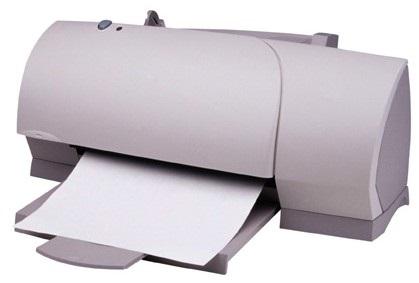

LO 6 Information Sheet 1
Printer
A computer printer is a computer peripheral device that produces a hard copy (permanent human-readable text and/or graphics, usually on paper) from data stored in a computer connected to it A printer is used to print anything that you want, like pictures or documents or data. Printers are awesome devices that plug in where there is a USB slot, from there you can click print and the document is sent to the port where you document is printed onto a piece of paper. You can print images, documents, cards, etc.As we have already seen in the unit before, it is very easy to install new hardware, such as printers, since the majority use Plug&Play technology. This allows the operating system to recognize the new printer by simply plugging it in.
Nevertheless, in some cases we may need to do the process manually. When we plug a printer into our computer it is necessary to install the appropriate drivers so that our computer will recognize it. Next we will learn to install a printer manually and to customize it to our needs.
